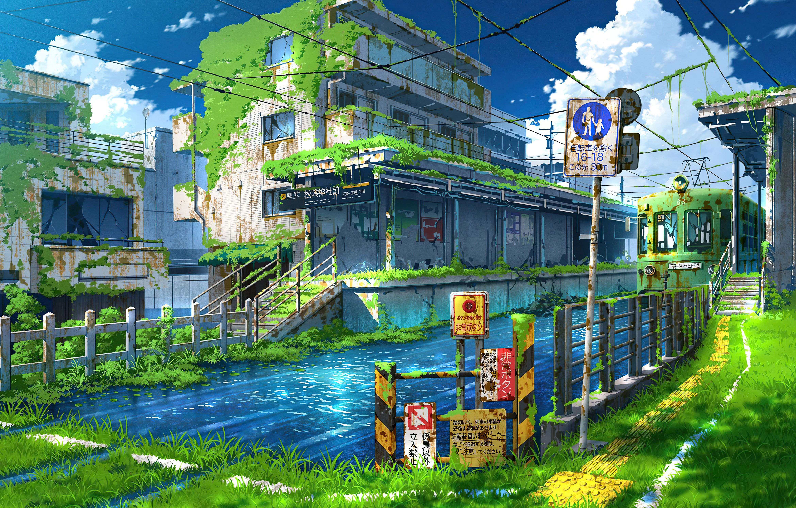
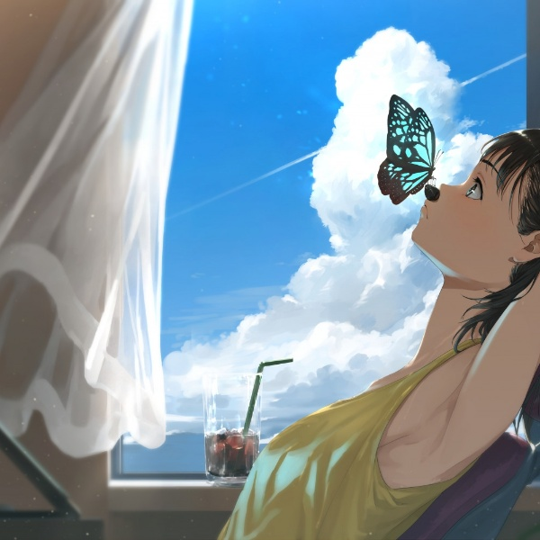
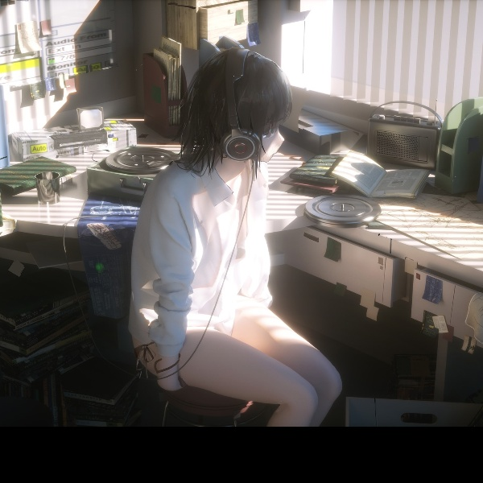
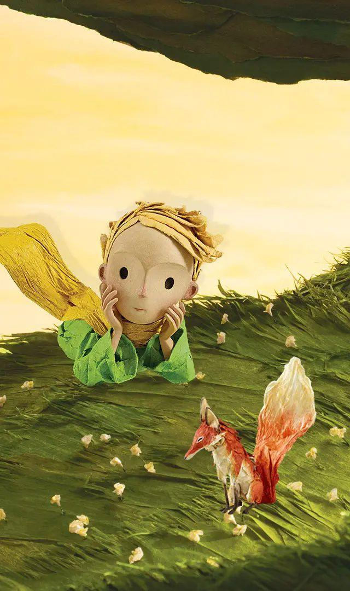
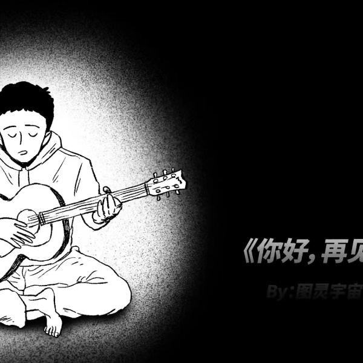

欢迎来到我的个人网站-童话中的童年
“我时常会想起那个童话中的的童年，无忧无虑，所有的问题都迎刃而解”


“我们不断的长大，整天忙忙碌碌，像一群群没有灵魂的苍蝇，喧闹着，躁动着，听不到灵魂深处的声音。时光流逝，童年远去，我们渐渐地变老，岁月带走了许许多多的回忆，也消蚀了心底曾今拥有的那份童稚的纯真，我们不顾心灵桎梏，沉溺于人世浮华，专注于利益法则，终于我们把自己弄丢了。”
所有的大人都曾经是小孩，然而，只有少数的人在时间的打磨下保留了童心。
守住纯真的童心，是人最初追寻的爱与责任。
"Quand tu regarderas le ciel, la nuit, puisque j'habiterai dans l'une d'elles, puisque je rirai dans l'une d'elles, alors ce sera pour toi comme si riaient toutes les etoiles."
「当你在夜晚抬头看着星空，因为我住在其中一颗星球上，因为我在那颗星球上对着你笑，对你而言，就像整个星空都为你而笑一样，你拥有了为你而笑的整片星空。」
小王子对飞行员说。浩瀚宇宙之间，总有一个你笑着的理由，为了寻找，我们有了出发的动力，我们深信自己在世上不仅只独活，我们的存在有某种相遇的必然，而人生，就是在不断的寻找之间发现意义。


“ Tu n'es encore pour moi qu'un petit garcon tout semblable a cent mille petits garcons. Et je n'ai pas besoin de toi. Et tu n'as pas besoin de moi non plus. Je ne suis pour toi qu'un renard semblable a cent mille renards. Mais, si tu m'apprivoises, nous aurons besoin l'un de l'autre. Tu seras pour moi unique au monde. Je serai pour toi unique au monde.”
「对我来说，你只不过是个小男孩，就像其他上千万个小男孩一样。我不需要你，你也不需要我。对你而言，我也只是一只狐狸，就跟其他上千万只狐狸一样。但是，如果你驯养了我，我们就彼此需要了。对我而言，你就是宇宙之间独特的存在；对你而言，我也是世界上独特的存在。」
“C'est trop loin,Je ne peux pas emporter ce corps la.C'est trop lourd. Mais ce sera comme une vieille ecorce abandonnee,Ce n'est pas triste les vieilles ecorces…”
「太远了，我无法再拖着这个身体前行，太重了。但是这就像旧的树皮剥落一样啊，我们不该为老树皮感到悲伤...」
我们谈论生，谈论爱，也谈论死亡。小王子阖眼之前，惦记着狐狸，惦记着玫瑰，惦记着星星，惦记着飞行员，最后轻轻的像棵树一样倒在地上。他的意识离开了太重的身体，去了一个能更自由的地方。
